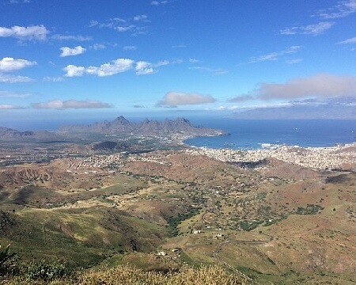
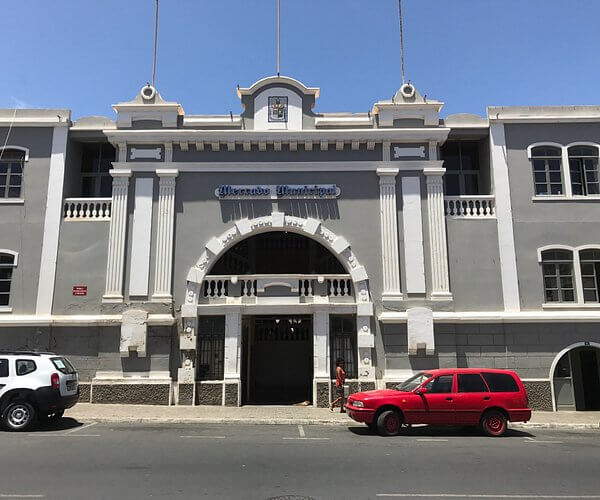
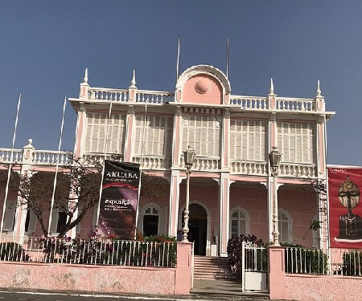
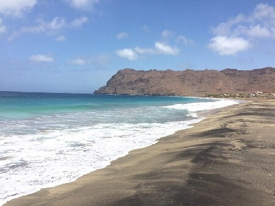
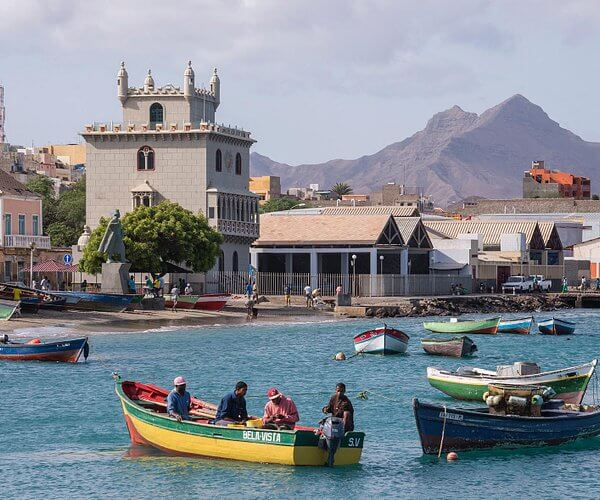

Come join us for the chamber meet and greet Wednesday at 7:00 p.m.
North
Chamber of Commerce

Monte Verde is a mountain in the eastern part of the island of Sâo Vicente. It is the island's highest point. All species and communities of endemic flora of São Vicente are concentrated in Monte Verde.

This is the city's indoor market. Interesting to walk around and to see the many different local products as well as herbs sold here

On Cesaria Évora Museum, it is possible to find a large part of her discography, clothing, personal objects, photographs and videos.

São Pedro Beach is a stunning white sand beach with crystal clear turquoise waters. During low tide, visitors can explore the fascinating rock formation that line the beach while during high tide they can take part in some exciting watersports such as kitesurfing or windsurfing.

Mindelo's Museum of the sea is located in the repurposed Torre de Mindelo (which was modeled after Lisbon's Torre de Belem). The museum chronicles the rich maritime history of nothern Cape Verde. Featured exhibits include themes such as whaling, warships, migration, biodiversity, aquatic archeology and even music.